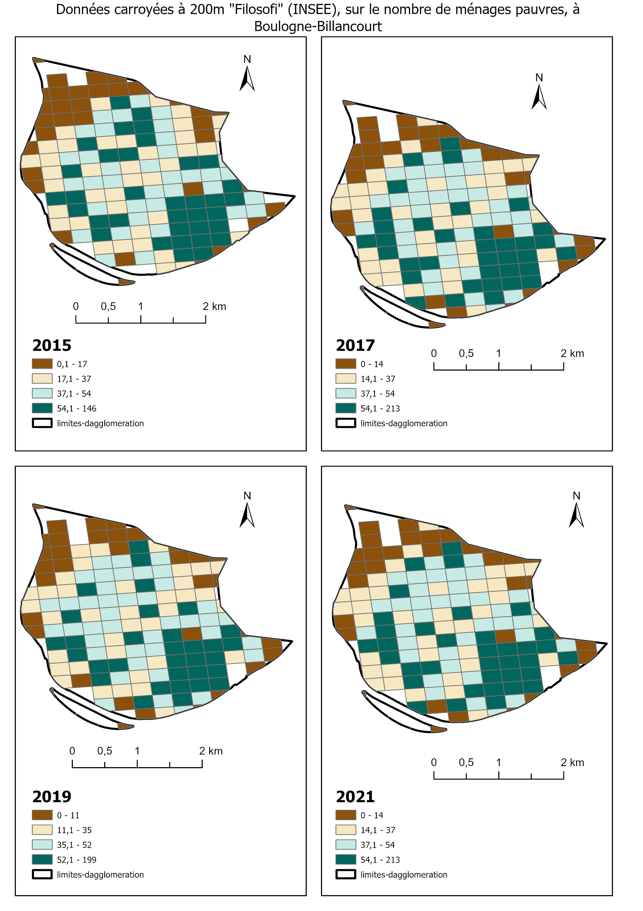

Le sud-ouest de Boulogne-Billancourt a accueilli, entre 1898 et 1992 un important site de production de Renault. La fermeture du site a suscité un ambitieux projet de requalification, visant à le remplacer par un éco-quartier capable de faire face à d'éventuelles crues, car il s'agit d'une zone innondable. Les projets de requalification sont souvent critiqués en ce qu'ils nourrissent des phénomènes de gentrification. Il convient donc de se demander si le Quartier du Trapèze échappe à la règle ou non.
